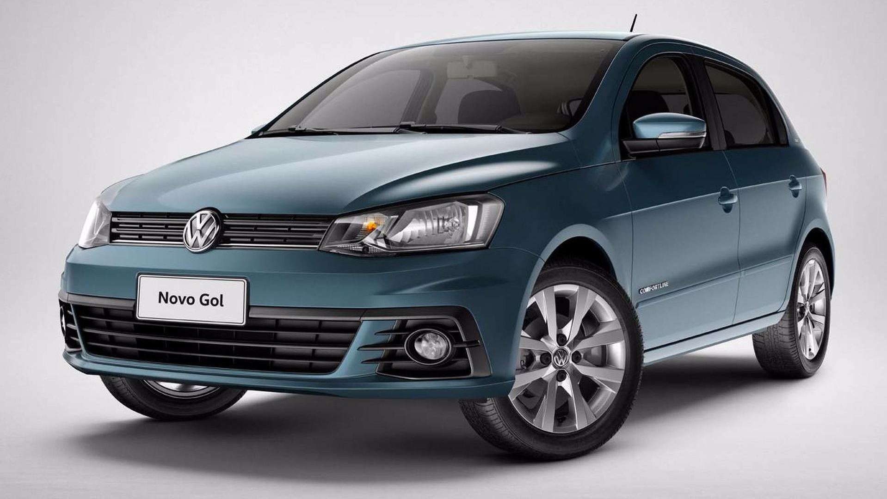
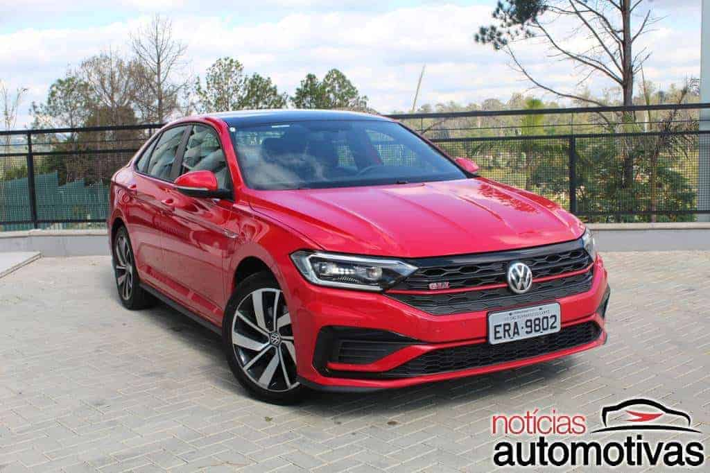
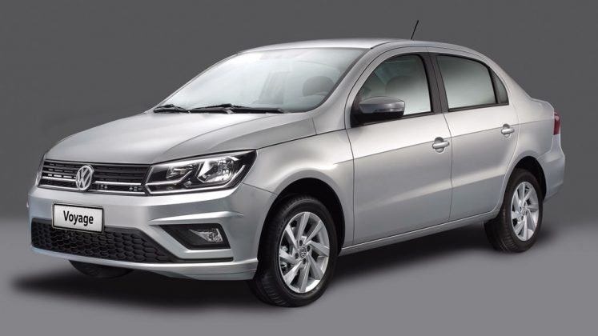

Itens de Série: Recebe ar-condicionado digital Climatronic, retrovisores externos com rebatimento elétrico, banco do passageiro dianteiro rebatível, alavanca do freio de mão revestida em couro, volante com paddle shifts, piloto automático.
Cores Disponíveis: Vermelho, Preto, Branco, Cinza, Azul

Volkswagen Gol
Ano: 2015
Km: 75.000
Itens de Série: Alarme, sensor de estacionamento traseiro, luzes de leitura, alças de segurança no teto, coluna de direção com ajuste de altura e de profundidade, espelhos retrovisores e maçanetas na cor do veículo, trio elétrico, repetidores de seta, faróis de neblina, para-sóis com espelho, rodas de liga leve aro 15.
Cores Disponíveis: Vermelho, Branco, Preto, Azul, Cinza, Verde

Volkswagen Jetta
Ano: 2019
Km: 45.000
Itens de Série: banco do motorista com apoio lombar ajustável eletricamente; carregador de celular por indução, comando automático do farol, com farol de rodagem diurna, função "Leaving-Home" e função manual.
Cores Disponíveis: Vermelho, Cinza, Branco, Preto

Volkswagen Voyage
Ano: 2019
Km: 100.000
Itens de Série: Cintos e encosto de cabeça para todos os ocupantes, Isofix, alerta de frenagem de emergência, aviso sonoro de faróis acesos, suporte para celular, banco do motorista com ajuste de altura, vidros dianteiros e travas.
Cores Disponíveis: Preto, Cinza, Branco, Vermelho, Azul